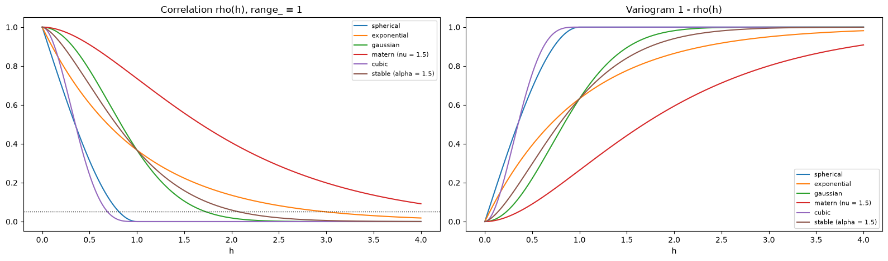
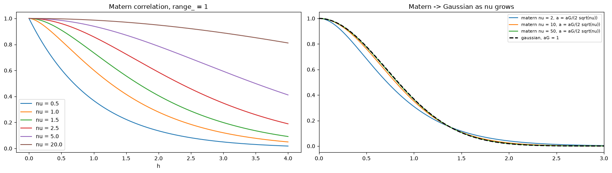

Dataset: mostly synthetic (distances, simulated fields); Jura soil survey (Data/00_shared/data_geostatistics/jura_data.csv) for choosing a model from data
Library:geolattice.geostatistics.correlation_function (module geolattice.geostatistics.kriging.bayesian_kriging), with BayesianKriging for model choice
Every kriging and Gaussian simulation method rests on a model of how correlation decays with distance. correlation_function(h, model, range_, nu=1.5, alpha=1.0) returns that correlation, \(\rho(h)\), for the six models GeoLattice supports. It is the building block of all the Bayesian kriging classes, and it is useful on its own for building covariance matrices, simulating fields and comparing models.
Model
model=
Shape parameter
spherical
"spherical"
n/a
exponential
"exponential"
n/a
Gaussian
"gaussian"
n/a
Matérn
"matern"
smoothness nu
cubic
"cubic"
n/a
stable (powered exponential)
"stable"
exponent alpha in (0, 2]
The range_ parameter follows the Variogram convention of each model, so a fitted variogram’s parameters can be used directly. In the Bayesian kriging classes, nu is passed as the Matérn smoothness or as the stable exponent.
The notebook:
defines the models and their properties: positive definiteness, smoothness at the origin, practical range and numerical conditioning;
checks those properties numerically;
shows what each model’s fields look like;
chooses a model for real data by marginal likelihood.
Theory
Correlation, covariance and variogram
For a second-order stationary field \(Z(\mathbf{x})\) with partial sill \(\sigma^2\) and nugget \(c_0\):
So \(\rho(h) = 1 - \gamma(h)\) for a variogram with unit partial sill and no nugget, which is exactly how correlation_function evaluates it, from the variogram models in geolattice.geostatistics.core.variogram_models. In Bayesian kriging the covariance matrix is \(\sigma^2[\mathbf{R}(\phi) + \tau\mathbf{I}]\), with \(\mathbf{R}_{ij} = \rho(\lVert\mathbf{x}_i - \mathbf{x}_j\rVert)\) and \(\tau = c_0/\sigma^2\).
The models
With range parameter \(a\) and \(r = h/a\):
Model
\(\rho(h)\)
spherical
\(1 - \tfrac32 r + \tfrac12 r^3\) for \(r < 1\); \(0\) for \(r \ge 1\)
exponential
\(e^{-r}\)
Gaussian
\(e^{-r^2}\)
Matérn
\(\dfrac{2^{1-\nu}}{\Gamma(\nu)}\, r^\nu K_\nu(r)\), with \(K_\nu\) the modified Bessel function of the second kind
cubic
\(1 - (7r^2 - 8.75r^3 + 3.5r^5 - 0.75r^7)\) for \(r < 1\); \(0\) for \(r \ge 1\)
stable
\(e^{-r^\alpha}\), \(0 < \alpha \le 2\)
The spherical and cubic models have compact support: the correlation is exactly 0 beyond \(a\). The others only decay toward 0.
So \(\rho\) must be positive definite. By Bochner’s theorem this holds exactly when \(\rho\) is the Fourier transform of a non-negative spectral density. Validity depends on the dimension:
all six models are valid in 1, 2 and 3 dimensions;
the “triangular” function \(\max(1 - h/a, 0)\) is valid in 1 dimension only.
An invalid function can make kriging variances negative and Cholesky factorizations fail (Section 9).
Behaviour at the origin and smoothness
The behaviour of \(\rho\) near \(h = 0\) sets how rough the field is (Stein, 1999):
Linear at the origin (\(1 - \rho(h) \propto h\)): exponential, spherical, Matérn \(\nu = 1/2\), stable \(\alpha = 1\). The field is continuous but not differentiable; its sample paths are rough.
Parabolic at the origin (\(1 - \rho(h) \propto h^2\)): Gaussian, cubic, Matérn \(\nu > 1\), stable \(\alpha = 2\). The field is mean-square differentiable, with smooth sample paths.
In general, a Matérn field is \(\lceil\nu\rceil - 1\) times mean-square differentiable, and a stable field with \(\alpha < 2\) is not differentiable, with roughness increasing as \(\alpha\) decreases.
The behaviour near the origin matters far more for kriging than the shape at large lags (Stein, 1999).
The Matérn family
The Matérn model has a smoothness parameter \(\nu > 0\) and contains the most common models:
\(\nu = 1/2\): the exponential, \(\rho = e^{-r}\);
\(\nu = 3/2\): \(\rho = (1 + r)\,e^{-r}\);
\(\nu = 5/2\): \(\rho = (1 + r + r^2/3)\,e^{-r}\);
\(\nu \to \infty\): the Gaussian. With \(a = a_G / (2\sqrt{\nu})\), the Matérn correlation tends to \(e^{-(h/a_G)^2}\).
Its spectral density decays like \(\lVert\boldsymbol\omega\rVert^{-(2\nu + d)}\), which is why \(\nu\) controls the smoothness. Because it spans rough to smooth fields with one extra parameter, it is the default recommendation of much of the modern literature.
The stable family
\(\rho(h) = e^{-(h/a)^\alpha}\), with \(0 < \alpha \le 2\):
\(\alpha = 1\) is the exponential and \(\alpha = 2\) the Gaussian;
\(\alpha < 1\) gives a sharper drop at the origin and a heavier tail;
\(\alpha > 2\) is not positive definite.
In correlation_function the exponent is alpha, and the Bayesian kriging classes pass their nu argument as \(\alpha\) when model="stable".
Range parameter and practical range
The parameter \(a\) is not comparable across models. The practical range is the distance where \(\rho\) falls to 0.05 (where the variogram reaches 95% of its sill):
Model
Practical range
spherical
\(0.81\,a\); correlation 0 at \(a\)
exponential
\(\ln 20\,a \approx 3a\)
Gaussian
\(\sqrt{\ln 20}\,a \approx 1.73a\)
stable
\((\ln 20)^{1/\alpha}a \approx 3^{1/\alpha}a\)
Matérn
depends on \(\nu\)
When models are compared, their range grids should cover comparable practical ranges.
Numerical conditioning
Kriging solves systems with the correlation matrix \(\mathbf{R}\). Models that are very smooth at the origin (Gaussian, Matérn with large \(\nu\)) make neighbouring rows of \(\mathbf{R}\) nearly identical when points are close relative to the range, so \(\mathbf{R}\) becomes ill-conditioned: its condition number explodes. GeoLattice adds a tiny diagonal jitter (\(10^{-10}\) relative); in practice a small nugget, or a less smooth model, is the robust remedy.
Python Setup
Installation. This notebook needs installation option 4 (core, spatial analysis, spatial statistics and geostatistics): pip install "geolattice[geostats]". See “Installation options” in the GeoLattice README.
All six models with range_ = 1, and the corresponding variograms \(\gamma(h) = 1 - \rho(h)\) (unit sill, no nugget). The Matérn model is shown with \(\nu = 1.5\) and the stable model with \(\alpha = 1.5\).
Code
def rho(model, hh, a=1.0, nu=1.5, alpha=1.5):return correlation_function(hh, model, a, nu=nu, alpha=alpha)fig, axes = plt.subplots(1, 2, figsize=(16, 4.8))for m in MODELS: label = m + (" (nu = 1.5)"if m =="matern"else" (alpha = 1.5)"if m =="stable"else"") axes[0].plot(h, rho(m, h), label=label) axes[1].plot(h, 1- rho(m, h), label=label)axes[0].axhline(0.05, color="k", ls=":", lw=1)axes[0].set_title("Correlation rho(h), range_ = 1")axes[1].set_title("Variogram 1 - rho(h)")for ax in axes: ax.set_xlabel("h") ax.legend(fontsize=8)plt.tight_layout()plt.show()checks = {m: (rho(m, np.array([0.0]))[0], np.all(np.diff(rho(m, h)) <=1e-12), rho(m, np.array([10.0]))[0]) for m in MODELS}display(pd.DataFrame(checks, index=["rho(0)", "monotone decreasing", "rho(10)"]).T)record("rho(0) = 1 and monotone for every model", "PASS"ifall(v[0] ==1and v[1] for v in checks.values()) else"FAIL")record("compact support: spherical and cubic are 0 beyond range_","PASS"if np.all(rho("spherical", np.array([1.0, 2.0])) ==0) and np.all(rho("cubic", np.array([1.0, 2.0])) ==0) else"FAIL")

rho(0)
monotone decreasing
rho(10)
spherical
1.0
True
0.0
exponential
1.0
True
0.000045
gaussian
1.0
True
0.0
matern
1.0
True
0.000499
cubic
1.0
True
0.0
stable
1.0
True
0.0
✅ [PASS] rho(0) = 1 and monotone for every model
✅ [PASS] compact support: spherical and cubic are 0 beyond range_
Practical Ranges
The distance where each model’s correlation falls below 0.05, found numerically, against the formulas of Section 2.7.
✅ [PASS] practical ranges match the formulas max error 0.001
The numerical practical ranges match the formulas to within 0.002. Spherical is 0.812 against the rounded 0.81, and the rest are exact with \(\ln 20 \approx 2.996\). The cubic model reaches 0.05 at \(0.69a\).
The Matérn row is the one to remember. With the same range_ = 1, the practical range is 3.0 for \(\nu = 0.5\), 4.74 for \(\nu = 1.5\), 5.92 for \(\nu = 2.5\) and 8.09 for \(\nu = 5\). The stable model with \(\alpha = 0.5\) reaches 8.97. A range_ value therefore means something different in every model, so range grids and priors should be set in practical-range units, as Section 12 does.
Smoothness: Behaviour at the Origin and Sample Paths
Close to \(h = 0\), \(1 - \rho(h)\) grows linearly for the exponential and spherical models and quadratically for the Gaussian and cubic. On log-log axes the slope is the power: 1 for linear, 2 for parabolic. One-dimensional Gaussian fields simulated with each model (the same random numbers, practical range 1) show what that means for the data.
Code
hs = np.geomspace(1e-3, 1e-1, 50)slopes = {}fig, axes = plt.subplots(1, 2, figsize=(16, 4.8))for m, kw in [("exponential", {}), ("spherical", {}), ("matern", dict(nu=1.5)), ("gaussian", {}), ("cubic", {}), ("stable", dict(alpha=0.5))]: v =1- correlation_function(hs, m, 1.0, **kw) slope = np.polyfit(np.log(hs), np.log(v), 1)[0] label = m + (" nu=1.5"if m =="matern"else" alpha=0.5"if m =="stable"else"") slopes[label] = slope axes[0].loglog(hs, v, label=f"{label}: slope {slope:.2f}")axes[0].set_xlabel("h")axes[0].set_ylabel("1 - rho(h)")axes[0].set_title("Behaviour at the origin (log-log)")axes[0].legend(fontsize=8)x = np.linspace(0, 10, 600)d = np.abs(x[:, None] - x[None, :])eps = np.random.default_rng(0).standard_normal(len(x))scale = {"exponential": 1/3, "spherical": 1/0.81, "gaussian": 1/ np.sqrt(3), "matern": 1/3}for i, (m, kw) inenumerate([("exponential", {}), ("spherical", {}), ("matern", dict(nu=1.5)), ("gaussian", {})]): R = correlation_function(d, m, scale[m], **kw) L = np.linalg.cholesky(R +1e-8* np.eye(len(x))) axes[1].plot(x, L @ eps +3* i, label=m + (" nu=1.5"if m =="matern"else""))axes[1].set_title("1-D sample paths (same random numbers, offset for display)")axes[1].set_yticks([])axes[1].legend(fontsize=8, loc="upper right")plt.tight_layout()plt.show()display(pd.Series(slopes, name="log-log slope near 0").round(2).to_frame())record("exponential slope ~1, gaussian slope ~2", "PASS"ifabs(slopes["exponential"] -1) <0.05andabs(slopes["gaussian"] -2) <0.05else"FAIL",f"exponential {slopes['exponential']:.2f}, gaussian {slopes['gaussian']:.2f}")
The log-log slopes confirm the classification of Section 2.4:
exponential (0.99) and spherical (1.00) are linear at the origin;
Matérn \(\nu = 1.5\) (1.99), Gaussian (2.00) and cubic (1.98) are parabolic;
stable \(\alpha = 0.5\) has slope 0.47, which is \(\alpha\) itself, so it is rougher than the exponential.
The sample paths use the same random numbers and the same practical range, so they differ only in texture. The exponential and spherical paths are jagged at every scale. Matérn \(\nu = 1.5\) is smooth with visible changes of slope. The Gaussian path is very smooth, which is rarely realistic for soil or ore data.
The Matérn Family
The closed forms of Section 2.5 for \(\nu = 0.5, 1.5, 2.5\) are checked, then the limit to the Gaussian with the rescaled range \(a = a_G/(2\sqrt{\nu})\).
Code
r_ = hclosed = {0.5: np.exp(-r_), 1.5: (1+ r_) * np.exp(-r_), 2.5: (1+ r_ + r_ **2/3) * np.exp(-r_)}err = {nu: np.abs(correlation_function(h, "matern", 1.0, nu=nu) - f).max() for nu, f in closed.items()}print("max |matern - closed form|:", {k: f"{v:.1e}"for k, v in err.items()})record("Matern closed forms for nu = 0.5, 1.5, 2.5", "PASS"ifmax(err.values()) <1e-6else"FAIL", f"max error {max(err.values()):.1e}")aG =1.0fig, axes = plt.subplots(1, 2, figsize=(16, 4.6))for nu in [0.5, 1.0, 1.5, 2.5, 5.0, 20.0]: axes[0].plot(h, correlation_function(h, "matern", 1.0, nu=nu), label=f"nu = {nu}")axes[0].set_title("Matern correlation, range_ = 1")axes[0].set_xlabel("h")axes[0].legend()dist_to_gauss = []for nu in [1, 2, 5, 10, 20, 50]: m_ = correlation_function(h, "matern", aG / (2* np.sqrt(nu)), nu=nu) dist_to_gauss.append(np.abs(m_ - correlation_function(h, "gaussian", aG)).max())if nu in (2, 10, 50): axes[1].plot(h, m_, label=f"matern nu = {nu}, a = aG/(2 sqrt(nu))")axes[1].plot(h, correlation_function(h, "gaussian", aG), "k--", lw=2, label="gaussian, aG = 1")axes[1].set_xlim(0, 3)axes[1].set_title("Matern -> Gaussian as nu grows")axes[1].legend(fontsize=8)plt.tight_layout()plt.show()print("max |matern - gaussian| for nu = 1, 2, 5, 10, 20, 50:", np.round(dist_to_gauss, 4))record("Matern approaches the Gaussian as nu grows", "PASS"if dist_to_gauss[-1] <0.01and dist_to_gauss[-1] < dist_to_gauss[0] else"FAIL",f"max difference {dist_to_gauss[0]:.3f} (nu = 1) -> {dist_to_gauss[-1]:.4f} (nu = 50)")
max |matern - closed form|: {0.5: '4.4e-16', 1.5: '5.6e-16', 2.5: '6.7e-16'}
✅ [PASS] Matern closed forms for nu = 0.5, 1.5, 2.5 max error 6.7e-16

max |matern - gaussian| for nu = 1, 2, 5, 10, 20, 50: [0.1783 0.1019 0.0443 0.0227 0.0114 0.0046]
✅ [PASS] Matern approaches the Gaussian as nu grows max difference 0.178 (nu = 1) -> 0.0046 (nu = 50)
The Stable Family
\(\alpha\) from 0.5 to 2: \(\alpha = 1\) is the exponential and \(\alpha = 2\) the Gaussian. An exponent above 2 is rejected because it is not positive definite.
alpha = 2.5: stable exponent alpha must be in (0, 2]
✅ [PASS] stable alpha = 1 / 2 equal exponential / gaussian; alpha > 2 rejected errors 0.0e+00, 0.0e+00
Positive Definiteness in Practice
The smallest eigenvalue of the correlation matrix on 400 random points in the unit square, for each model with practical range about 0.5. A valid model gives eigenvalues \(\ge 0\) (up to rounding). For contrast, two invalid functions:
the triangular function \(\max(1 - h/a, 0)\), valid only in one dimension;
a stable model with \(\alpha = 2.5\), built by hand.
Code
pts = np.random.default_rng(1).uniform(0, 1, (400, 2))D = np.sqrt(((pts[:, None] - pts[None]) **2).sum(-1))mats = {"spherical": correlation_function(D, "spherical", 0.5/0.81),"exponential": correlation_function(D, "exponential", 0.5/3),"gaussian": correlation_function(D, "gaussian", 0.5/ np.sqrt(3)),"matern nu=1.5": correlation_function(D, "matern", 0.5/4.75, nu=1.5),"cubic": correlation_function(D, "cubic", 0.5),"stable alpha=1.5": correlation_function(D, "stable", 0.5/3** (1/1.5), alpha=1.5),"INVALID triangular (1-D only)": np.maximum(1- D /0.5, 0.0),"INVALID stable alpha=2.5": np.exp(-(D /0.3) **2.5)}eig = pd.Series({k: np.linalg.eigvalsh(v).min() for k, v in mats.items()}, name="smallest eigenvalue")display(eig.to_frame())valid_ok =all(eig[k] >-1e-8for k in mats ifnot k.startswith("INVALID"))invalid_neg =all(eig[k] <-1e-6for k in mats if k.startswith("INVALID"))record("valid models positive semi-definite, invalid ones not", "PASS"if valid_ok and invalid_neg else"FAIL")
smallest eigenvalue
spherical
5.313998e-03
exponential
1.311379e-02
gaussian
-1.319614e-14
matern nu=1.5
4.981923e-05
cubic
1.243578e-05
stable alpha=1.5
7.429634e-04
INVALID triangular (1-D only)
-4.238231e-01
INVALID stable alpha=2.5
-1.023516e+00
✅ [PASS] valid models positive semi-definite, invalid ones not
All six GeoLattice models give a non-negative smallest eigenvalue. The values run from \(1.3 \times 10^{-2}\) (exponential) down to \(5 \times 10^{-5}\) (Matérn) and \(-1.3 \times 10^{-14}\) for the Gaussian. The Gaussian value is rounding error: the matrix is valid but numerically singular, which Section 10 looks at.
The two invalid functions give clearly negative eigenvalues: −0.42 for the triangular function, which is valid only in one dimension, and −1.02 for the stable model with \(\alpha = 2.5\). Kriging with either matrix can produce negative variances, and Cholesky-based simulation fails. This is why correlation_function rejects \(\alpha > 2\).
Numerical Conditioning
The condition number of \(\mathbf{R}\) for 300 random points in the unit square, as the practical range grows from 0.1 to 2, for a rough model (exponential), a moderately smooth one (Matérn \(\nu = 1.5\)) and a very smooth one (Gaussian). Adding a relative nugget of 0.01 shows the usual remedy.
The smoothness of the model, more than the range, drives conditioning:
Practical range 0.1. The condition numbers are 61 (exponential), \(1.2 \times 10^3\) (Matérn 1.5) and \(1.1 \times 10^5\) (Gaussian).
Practical range 0.39. The Gaussian matrix reaches \(7 \times 10^{17}\). That is beyond \(1/\varepsilon \approx 10^{16}\), so its solution has no correct digits.
Practical range 2. The values are \(4.7 \times 10^4\) (exponential), \(2.7 \times 10^8\) (Matérn) and \(9.7 \times 10^{19}\) (Gaussian).
A relative nugget of 0.01 brings the Gaussian down to \(4.1 \times 10^3\) and \(2.4 \times 10^4\) for the last two ranges, similar to the exponential. A Gaussian model therefore needs a nugget in practice, even when the data seem to have none.
Simulated Two-Dimensional Fields
correlation_function is all that is needed to simulate a Gaussian field: build \(\mathbf{R}\), factor it, and multiply white noise. Fields on a 60 × 60 grid, with the same random numbers and a practical range of 0.3 for every model, show the texture each model implies.
All six fields share the same random numbers and the same practical range, so their large features sit in the same places. The differences are in the short-scale texture:
the exponential and stable \(\alpha = 0.5\) fields are speckled, and the stable one has the most fine detail;
the spherical field is also rough at short scale;
the Matérn \(\nu = 1.5\) and cubic fields show smooth blobs;
the Gaussian field is the smoothest.
Each field took about 0.7 s, because a dense Cholesky factorization costs \(O(n^3)\). For grids much beyond a few thousand nodes, use the sequential simulators of Section 05_07 instead.
Choosing a Model from Data
Which correlation model fits a real variable? BayesianKriging computes the marginal likelihood of each model, integrated over a grid of ranges and nugget ratios. The sum over the grid, weighted by the prior, is the model evidence, and differences of log evidence are log Bayes factors. For log-cadmium in the Jura, the candidates are:
the spherical, exponential, Gaussian and cubic models;
Matérn with \(\nu \in \{1, 1.5, 2.5\}\);
stable with \(\alpha \in \{0.25, 0.5, 0.75, 1.5\}\).
Matérn \(\nu = 0.5\) and stable \(\alpha = 1\) are left out because they are the exponential model; including them would count the same model three times in the posterior probabilities. Each range grid covers practical ranges from 0.1 to 4 km, and all models share the same flat trend and \(\sigma^2\) priors, so their evidences are comparable. The model prior is uniform over the list.
Code
DATA ="../../../../Data/00_shared/data_geostatistics/"jura = pd.read_csv(DATA +"jura_data.csv", index_col=0)xyj = jura[["Xloc", "Yloc"]].to_numpy(float)zj = np.log(jura["Cd"].to_numpy(float))PRAC = np.geomspace(0.1, 4.0, 25)NUG = [0.0, 0.1, 0.25, 0.5, 1.0]candidates = [("spherical", "spherical", 1.5, 1/0.81), ("exponential", "exponential", 1.5, 1/3), ("gaussian", "gaussian", 1.5, 1/ np.sqrt(3)), ("cubic", "cubic", 1.5, 1/0.6)]for nu in [1.0, 1.5, 2.5]: candidates.append((f"matern nu = {nu}", "matern", nu, 1/ practical("matern", nu=nu)))for a_ in [0.25, 0.5, 0.75, 1.5]: candidates.append((f"stable alpha = {a_}", "stable", a_, 1/ np.log(20) ** (1/ a_)))rows = []for name, model, shape, fac in candidates: m = BayesianKriging(model, nu=shape, range_grid=PRAC * fac, nugget_grid=NUG).fit(xyj, zj) p_ = m.posterior_ rows.append({"model": name, "log evidence": logsumexp(p_.log_marginal + p_.log_prior),"posterior mean practical range (km)": float((p_.weight * p_.range).sum() / fac),"posterior mean nugget ratio": float((p_.weight * p_.nugget_ratio).sum())})ev = pd.DataFrame(rows).set_index("model")ev["log Bayes factor vs best"] = ev["log evidence"] - ev["log evidence"].max()ev["posterior probability"] = np.exp(ev["log Bayes factor vs best"]) / np.exp(ev["log Bayes factor vs best"]).sum()display(ev.sort_values("log evidence", ascending=False).round(3))
log evidence
posterior mean practical range (km)
posterior mean nugget ratio
log Bayes factor vs best
posterior probability
model
stable alpha = 0.5
-841.773
1.605
0.036
0.000
0.689
stable alpha = 0.75
-842.661
0.709
0.161
-0.889
0.283
exponential
-845.040
0.494
0.254
-3.267
0.026
matern nu = 1.0
-847.849
0.341
0.283
-6.077
0.002
matern nu = 1.5
-849.560
0.282
0.287
-7.787
0.000
stable alpha = 1.5
-850.709
0.275
0.290
-8.936
0.000
matern nu = 2.5
-851.113
0.223
0.280
-9.341
0.000
gaussian
-852.727
0.142
0.258
-10.954
0.000
spherical
-853.068
0.296
0.301
-11.296
0.000
cubic
-853.212
0.118
0.256
-11.439
0.000
stable alpha = 0.25
-854.507
3.492
0.006
-12.734
0.000
The evidence ranks the models by their behaviour at the origin. The rough models come first:
stable \(\alpha = 0.5\), posterior probability 0.69;
stable \(\alpha = 0.75\), 0.28;
exponential, 0.026.
Every model that is parabolic at the origin has a log Bayes factor of −6 or worse (Matérn \(\nu \ge 1\), stable \(\alpha = 1.5\), cubic), and the Gaussian is at −11.0. Log-cadmium in the Jura is a rough variable.
The two stable models win by changing how the variance is split. Stable \(\alpha = 0.5\) has a posterior mean nugget ratio of 0.036 and a practical range of 1.6 km, against 0.25 and 0.49 km for the exponential. Its correlation drops steeply near the origin and then decays slowly, so it treats as spatial structure much of what the exponential model calls nugget. Going further, to \(\alpha = 0.25\), is strongly rejected (−12.7), and its practical range of 3.5 km is close to the top of the 4 km grid.
Evidence measures how well a model predicts the data as a whole. A hold-out check asks the practical question directly. The models are fitted on a 70% training set, stratified by land use (random_state=42), and the 30% test set is predicted as new observations (signal=False, which includes the nugget). The scores are RMSE, the coverage of the 90% predictive interval, and the mean log predictive density (MLPD; higher is better), computed from the Student-t mixture.
test points: 108
✅ [PASS] hold-out 90% intervals cover 80-97% for every model range 0.90-0.94
On the 108 test points, the hold-out comparison splits the models into the same two groups as the evidence:
Rough models. Stable \(\alpha = 0.75\), the exponential and stable \(\alpha = 0.5\) are nearly tied, with RMSE 0.528 to 0.531, MLPD −0.742 to −0.749 and 90% coverage 0.944.
Smooth models. The Gaussian and cubic are the worst, with RMSE 0.572 to 0.573 and coverage 0.898. The Matérn models lie in between and get worse as \(\nu\) grows.
Within the rough group, the evidence prefers stable \(\alpha = 0.5\) by 3.3 log units on 359 points, but that does not show up as a hold-out difference on 108 points. It is a single split, and the predictions of the three rough models are almost the same. The practical conclusion is to use a model that is rough at the origin. The exponential model is a safe default here, and the stable model with \(\alpha\) chosen by evidence is a refinement.
Summary and Conclusions
Code
pd.DataFrame(RESULTS)
Feature
Status
Notes
0
rho(0) = 1 and monotone for every model
PASS
1
compact support: spherical and cubic are 0 bey...
PASS
2
practical ranges match the formulas
PASS
max error 0.001
3
exponential slope ~1, gaussian slope ~2
PASS
exponential 0.99, gaussian 2.00
4
Matern closed forms for nu = 0.5, 1.5, 2.5
PASS
max error 6.7e-16
5
Matern approaches the Gaussian as nu grows
PASS
max difference 0.178 (nu = 1) -> 0.0046 (nu = 50)
6
stable alpha = 1 / 2 equal exponential / gauss...
PASS
errors 0.0e+00, 0.0e+00
7
valid models positive semi-definite, invalid o...
PASS
8
hold-out 90% intervals cover 80-97% for every ...
PASS
range 0.90-0.94
correlation_function(h, model, range_, nu, alpha) returns \(\rho(h) = 1 - \gamma(h)\) for six models in the Variogram parametrization, with \(\rho(0) = 1\), and it rejects a stable \(\alpha\) outside \((0, 2]\). In the Bayesian kriging classes, nu is the Matérn smoothness or the stable exponent.
The behaviour at the origin sets the smoothness of the field: slope 1 for the exponential and spherical, 2 for the Gaussian, cubic and Matérn \(\nu > 1\), and \(\alpha\) for the stable model. It also matters most for prediction.
range_ is not comparable across models. The practical range is \(\ln 20\,a\) for the exponential, \(1.73a\) for the Gaussian, \(0.81a\) for the spherical and \(4.74a\) for Matérn \(\nu = 1.5\).
The Matérn closed forms and the Gaussian limit check out to machine precision and to 0.005 respectively. Stable \(\alpha = 1\) and \(2\) reproduce the exponential and the Gaussian exactly.
All six models are positive definite in 2D; the triangular function and stable \(\alpha > 2\) are not.
Smooth models make the correlation matrix ill-conditioned: the Gaussian passes \(10^{17}\) at a moderate range. A small nugget fixes it.
For Jura log-cadmium, both the marginal likelihood and a hold-out test favour models that are rough at the origin over smooth ones. Comparing correlation models by evidence in BayesianKriging is a quick, principled way to choose.